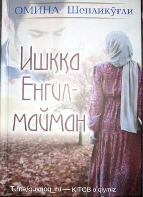

IYYunus ismli yigitning dinsizlikdan imon va haqiqatni topishgacha bo'lgan ruhiy izlanishlari haqida roman.
Ushbu asar bosh qahramon Yunusning xudosizlikdan Allohni tanishgacha bo'lgan murakkab hayot yo'li va ruhiy izlanishlari haqida hikoya qiladi. Uning hayotidagi ikki ayol — onasi va suygan qizi Asuman uni butunlay qarama-qarshi yo'llarga chorlaydi. Roman o'quvchini hayotning asl mohiyati, imon va haqiqat ustida chuqur mulohaza yuritishga undaydi.